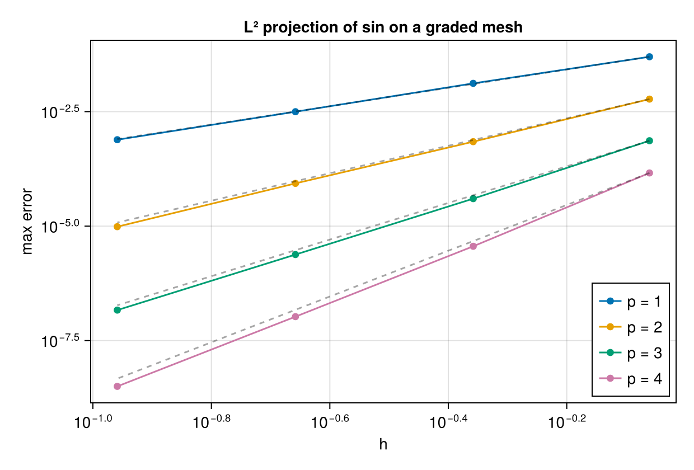
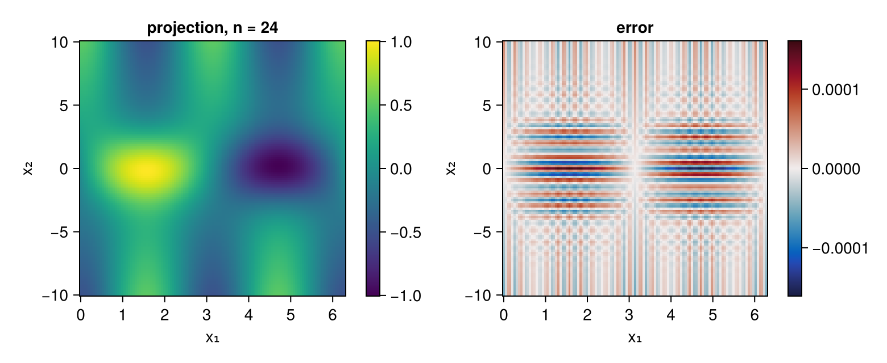
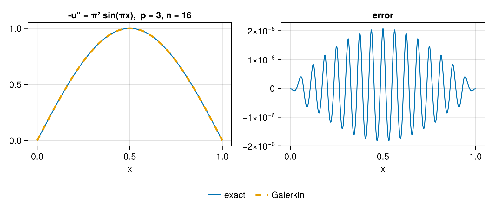
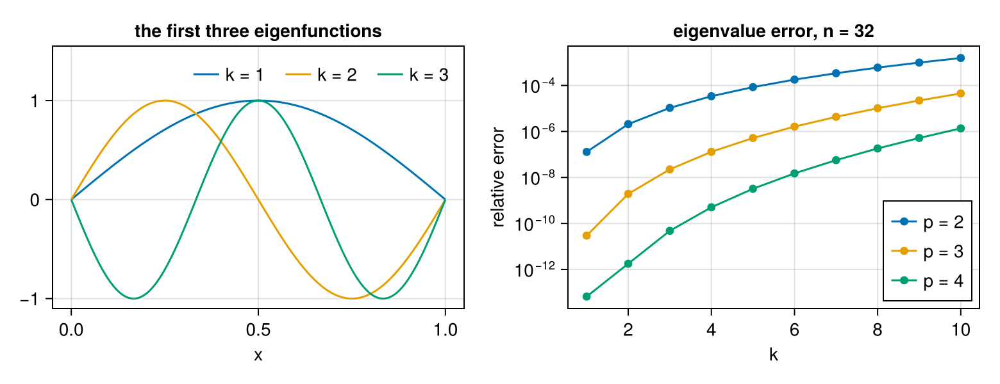
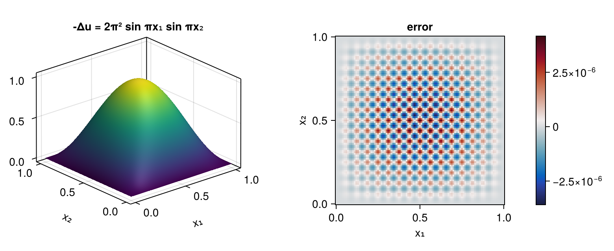
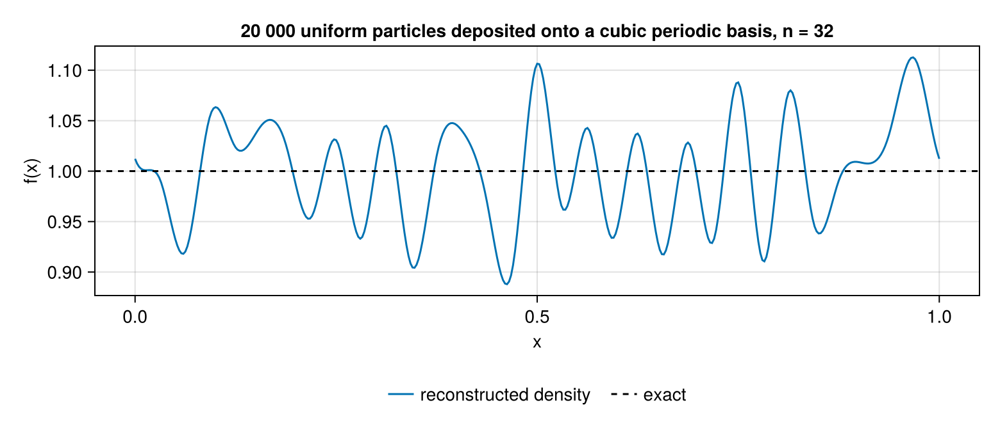

Gallery
Eight problems, solved and measured. Every number and figure on this page is produced when the manual is built, so nothing here is a claim about what the package should do.
using SimpleSplines
using CairoMakie
using LinearAlgebra1. $L^2$ projection converges at order $p+1$
The projection of a smooth function onto a degree-$p$ spline space is accurate to $O(h^{p+1})$. The mesh here is a GradedMesh rather than a uniform one, deliberately: refining a graded mesh gives a genuine family, so a rate measured across it means something, whereas a uniform mesh would make every assembly circulant and could confirm the rate for the wrong reason.
target(x) = sin(x)
sample = range(0, 2π; length = 400)[1:399]
function projection_error(p, n)
b = BSplineBasis(GradedMesh(n, 2π), p, Periodic())
q = SplineQuadrature(b; nq = quadrature_order(p) + 3)
û = l2_projection(q, target)
(meshwidth(b), maximum(abs(evaluate(b, û, x) - target(x)) for x in sample))
end
ns = (8, 16, 32, 64)
for p in 1:4
hs = Float64[]
es = Float64[]
for n in ns
h, e = projection_error(p, n)
push!(hs, h)
push!(es, e)
end
rate = log(es[end - 1] / es[end]) / log(hs[end - 1] / hs[end])
println("p = ", p, " error at n = 64: ", es[end],
" measured rate: ", round(rate; digits = 3), " (expected ", p + 1, ")")
endp = 1 error at n = 64: 0.0007708743325764988 measured rate: 2.034 (expected 2)
p = 2 error at n = 64: 9.71063462779087e-6 measured rate: 3.145 (expected 3)
p = 3 error at n = 64: 1.4650848956243578e-7 measured rate: 4.032 (expected 4)
p = 4 error at n = 64: 3.1619112259018145e-9 measured rate: 5.063 (expected 5)fig = Figure(size = (620, 420))
ax = Axis(fig[1, 1]; xscale = log10, yscale = log10, xlabel = "h", ylabel = "max error",
title = "L² projection of sin on a graded mesh")
for p in 1:4
data = [projection_error(p, n) for n in ns]
hh, ee = first.(data), last.(data)
scatterlines!(ax, hh, ee; label = "p = $(p)")
lines!(ax, hh, ee[1] .* (hh ./ hh[1]) .^ (p + 1);
color = (:black, 0.35), linestyle = :dash)
end
axislegend(ax; position = :rb)
fig
The dashed lines are $h^{p+1}$ for reference.
2. Which polynomials survive which boundary condition
An $L^2$ projection reproduces a polynomial exactly when that polynomial lies in the span of the basis, and polynomial_reproduction says which do. This is what decides whether a conservation law survives a discretisation, so it is worth seeing rather than trusting.
function reproduces(bc, p, k)
b = BSplineBasis(UniformMesh(8, 0 .. 1), p, bc)
q = SplineQuadrature(b)
û = l2_projection(q, x -> x^k)
maximum(abs(evaluate(b, û, x) - x^k) for x in range(0, 1; length = 201))
end
conditions = (Free(), Periodic(), Dirichlet(), Neumann(), Natural(),
Constraint(0, 0, 0, 1), Robin(1.0, 1.0))
println(rpad("condition", 24), rpad("reproduces", 12),
"error on 1, x, x², x³, x⁴ (p = 4)")
for bc in conditions
r = polynomial_reproduction(BSplineBasis(UniformMesh(8, 0 .. 1), 4, bc))
errs = [reproduces(bc, 4, k) for k in 0:4]
println(rpad(repr(bc), 24), rpad(r, 12),
join((rpad(e < 1e-9 ? "exact" : string(round(e; sigdigits = 2)), 10)
for e in errs)))
endcondition reproduces error on 1, x, x², x³, x⁴ (p = 4)
Free() 4 exact exact exact exact exact
Periodic() 0 exact 0.5 0.53 0.55 0.56
Dirichlet() -1 1.0 1.0 1.0 1.0 1.0
Neumann() 0 exact 0.014 0.028 0.042 0.055
Natural() 1 exact exact 0.00068 0.002 0.004
Constraint(0, 0, 0, 1) 2 exact exact exact 8.8e-5 0.00036
Robin(1.0, 1.0) -1 0.014 0.027 0.041 0.055 0.069Read the table along each row: the monomials up to degree r come back exactly, and the one after does not. Free reproduces everything up to its degree, Periodic only the constants ($x$ is not periodic), Dirichlet nothing at all, and Constraint(0, 0, 0, 1) — the condition $u''' = 0$ — reproduces up to $x^2$.
3. Structural identities
Three identities that hold exactly, and one that holds only on a uniform mesh. The point of the RandomMesh column is that a check run only on a UniformMesh confirms a property whose proof does not need the mesh at all — the assemblies there are circulant.
meshes = ("uniform" => UniformMesh(16, 2π),
"graded" => GradedMesh(16, 2π),
"random" => RandomMesh(16, 2π))
println(rpad("", 10), rpad("S + Sᵀ", 12), rpad("∫φ'φ'' + ∫φφ'''", 18),
rpad("K·1", 12), "λ_min(K)")
for (name, m) in meshes
q = SplineQuadrature(BSplineBasis(m, 3, Periodic()))
S = derivative_matrix(q)
K = stiffness_matrix(q)
println(rpad(name, 10),
rpad(round(maximum(abs, S + S'); sigdigits = 2), 12),
rpad(round(maximum(abs, mixed_matrix(q, 1, 2) + mixed_matrix(q, 0, 3));
sigdigits = 2), 18),
rpad(round(maximum(abs, K * ones(nbasis(q))); sigdigits = 2), 12),
round(minimum(eigvals(Symmetric(Matrix(K)))); sigdigits = 2))
end S + Sᵀ ∫φ'φ'' + ∫φφ''' K·1 λ_min(K)
uniform 6.7e-16 3.0e-14 8.9e-16 1.2e-15
graded 6.7e-16 1.4e-14 6.8e-16 -5.9e-16
random 6.1e-16 3.8e-14 5.7e-16 8.8e-17- $S + S^{\mathsf T} = 0$: integration by parts over a torus leaves no boundary term.
- $\int \phi'\phi'' + \int \phi\phi''' = 0$: the same, one derivative higher. This is what lets a $\mathcal{C}^2$ cubic basis carry a third-order operator.
- $\mathbb{K}\mathbf{1} = 0$ and $\lambda_{\min}(\mathbb{K}) = 0$: the constants are in the kernel of the stiffness matrix, because they are in the span of the basis.
And the one that is not mesh-independent — the antisymmetry needs the quadrature to integrate a total derivative of degree $2p-1$ exactly, i.e. $n_q \ge p$:
for nq in 2:4
qu = SplineQuadrature(BSplineBasis(UniformMesh(16, 2π), 3, Periodic()); nq = nq)
qr = SplineQuadrature(BSplineBasis(RandomMesh(16, 2π), 3, Periodic()); nq = nq)
println("nq = ", nq,
" uniform ", rpad(round(maximum(abs,
derivative_matrix(qu) + derivative_matrix(qu)'); sigdigits = 2), 12),
" random ", round(maximum(abs,
derivative_matrix(qr) + derivative_matrix(qr)'); sigdigits = 2))
endnq = 2 uniform 2.4e-15 random 0.0093
nq = 3 uniform 8.3e-16 random 1.1e-15
nq = 4 uniform 5.0e-16 random 1.5e-15At nq = 2 on a random mesh the defect is $\approx 10^{-2}$, not $10^{-15}$. On the uniform mesh it is machine precision at every nq, which is why the check has to be run somewhere else.
4. A non-separable function in two dimensions
The tensor-product basis is separable; the function projected onto it need not be.
gfun(x) = sin(x[1]) * exp(-x[2]^2 / 8) + cos(2x[1]) * x[2] / 20
grid2 = [(2π * (i - 0.5) / 37, -10 + 20 * (j - 0.5) / 41) for i in 1:37, j in 1:41]
errs2 = Float64[]
for n in (8, 16, 32)
Bn = BSplineBasis(UniformMesh(n, 0 .. 2π), 3, Periodic()) ⊗
BSplineBasis(UniformMesh(n, -10 .. 10), 3)
Qn = TensorProductQuadrature(Bn)
ĝ = l2_projection(Qn, gfun)
push!(errs2, maximum(abs(evaluate(Bn, ĝ, x) - gfun(x)) for x in grid2))
end
errs2, errs2[1] / errs2[2], errs2[2] / errs2[3]([0.011394115640471048, 0.0010196821014797353, 4.5354427057886504e-5], 11.174184212840663, 22.482526351359272)Cubics on both axes, so the error should fall by about $2^4 = 16$ per refinement.
Bshow = BSplineBasis(UniformMesh(24, 0 .. 2π), 3, Periodic()) ⊗
BSplineBasis(UniformMesh(24, -10 .. 10), 3)
ĝshow = l2_projection(TensorProductQuadrature(Bshow), gfun)
gx = range(0, 2π; length = 121)
gy = range(-10, 10; length = 121)
Zh = [evaluate(Bshow, ĝshow, (x, y)) for x in gx, y in gy]
Ze = [gfun((x, y)) for x in gx, y in gy]
fig = Figure(size = (780, 320))
ax1 = Axis(fig[1, 1]; xlabel = "x₁", ylabel = "x₂", title = "projection, n = 24")
hm = heatmap!(ax1, gx, gy, Zh)
Colorbar(fig[1, 2], hm)
ax2 = Axis(fig[1, 3]; xlabel = "x₁", ylabel = "x₂", title = "error")
he = heatmap!(ax2, gx, gy, Zh .- Ze; colormap = :balance)
Colorbar(fig[1, 4], he)
fig
5. Poisson in one dimension
\[-u'' = f \ \text{ on } (0,1) , \qquad u(0) = u(1) = 0 ,\]
discretised by Galerkin on a Dirichlet-recombined basis: $\mathbb{K}\hat{u} = \mathbf{b}$ with $\mathbb{K} = \int \psi_k'\psi_l'$ the stiffness_matrix and $b_i = \int f \psi_i$. There is no separate step that imposes the boundary condition — the basis already has one function fewer per end, so K is the matrix of the constrained problem.
exact(x) = sinpi(x)
rhsfun(x) = π^2 * sinpi(x)
function poisson1d(p, n)
b = BSplineBasis(UniformMesh(n, 0 .. 1), p, Dirichlet())
q = SplineQuadrature(b)
K = stiffness_matrix(q)
load = basis_values(q, 0) * (quadrature_weights(q) .* rhsfun.(quadrature_nodes(q)))
û = Matrix(K) \ load
(b, û, maximum(abs(evaluate(b, û, x) - exact(x))
for x in range(0, 1; length = 401)))
end
for p in 2:4
es = [poisson1d(p, n)[3] for n in (8, 16, 32, 64)]
println("p = ", p, " errors ", round.(es; sigdigits = 3),
" rates ", round.([log2(es[i] / es[i + 1]) for i in 1:3]; digits = 2))
endp = 2 errors [0.000491, 6.07e-5, 7.57e-6, 9.46e-7] rates [3.01, 3.0, 3.0]
p = 3 errors [3.44e-5, 2.08e-6, 1.29e-7, 8.07e-9] rates [4.05, 4.01, 4.0]
p = 4 errors [2.24e-6, 7.47e-8, 2.39e-9, 7.5e-11] rates [4.91, 4.97, 4.99]Order $p+1$, as for the projection. The Dirichlet condition holds identically:
bP, ûP, _ = poisson1d(3, 16)
uh = Spline(bP, ûP)
uh(0.0), uh(1.0), uh(0.5)(0.0, 0.0, 1.0000020817761017)fig = Figure(size = (780, 340))
xs = range(0, 1; length = 401)
ax1 = Axis(fig[1, 1]; xlabel = "x", title = "-u'' = π² sin(πx), p = 3, n = 16")
lines!(ax1, xs, exact.(xs); label = "exact")
lines!(ax1, xs, uh.(xs); linestyle = :dash, linewidth = 3, label = "Galerkin")
ax2 = Axis(fig[1, 2]; xlabel = "x", title = "error")
lines!(ax2, xs, uh.(xs) .- exact.(xs))
Legend(fig[2, 1:2], ax1; orientation = :horizontal, framevisible = false)
fig
A variable coefficient costs nothing extra
\[-\big(a(x) u'\big)' = f , \qquad a(x) = 1 + x^2 ,\]
is the same problem with weighted_matrix(q, a, 1, 1) in place of the stiffness matrix — one weighted contraction of the same tabulation.
acoef(x) = 1 + x^2
fvar(x) = π^2 * acoef(x) * sinpi(x) - 2x * π * cospi(x) # so that u = sin(πx) again
function poisson1d_variable(p, n)
b = BSplineBasis(UniformMesh(n, 0 .. 1), p, Dirichlet())
q = SplineQuadrature(b)
A = weighted_matrix(q, acoef, 1, 1)
load = basis_values(q, 0) * (quadrature_weights(q) .* fvar.(quadrature_nodes(q)))
û = Matrix(A) \ load
maximum(abs(evaluate(b, û, x) - exact(x)) for x in range(0, 1; length = 401))
end
for p in 2:4
es = [poisson1d_variable(p, n) for n in (8, 16, 32, 64)]
println("p = ", p, " errors ", round.(es; sigdigits = 3),
" rates ", round.([log2(es[i] / es[i + 1]) for i in 1:3]; digits = 2))
endp = 2 errors [0.000518, 6.25e-5, 7.69e-6, 9.53e-7] rates [3.05, 3.02, 3.01]
p = 3 errors [3.45e-5, 2.08e-6, 1.29e-7, 8.07e-9] rates [4.05, 4.01, 4.0]
p = 4 errors [2.29e-6, 7.59e-8, 2.41e-9, 7.53e-11] rates [4.91, 4.98, 5.0]6. The Dirichlet eigenvalues
\[-u'' = \lambda u \ \text{ on } (0,1) , \qquad u(0) = u(1) = 0 , \qquad \lambda_k = (k\pi)^2 ,\]
is the generalised eigenproblem $\mathbb{K} v = \lambda \mathbb{M} v$. The mass matrix is not the identity — the basis is not orthonormal — so this is a genuine pencil and not a plain eigenproblem.
exact_λ = [(k * π)^2 for k in 1:6]
for p in 2:4
b = BSplineBasis(UniformMesh(32, 0 .. 1), p, Dirichlet())
q = SplineQuadrature(b)
λ = eigvals(Symmetric(Matrix(stiffness_matrix(q))),
Symmetric(Matrix(mass_matrix(q))))
rel = abs.(λ[1:6] .- exact_λ) ./ exact_λ
println("p = ", p, " relative error on λ₁…λ₆: ", round.(rel; sigdigits = 2))
endp = 2 relative error on λ₁…λ₆: [1.3e-7, 2.1e-6, 1.1e-5, 3.4e-5, 8.5e-5, 0.00018]
p = 3 relative error on λ₁…λ₆: [3.0e-11, 1.9e-9, 2.3e-8, 1.3e-7, 5.2e-7, 1.6e-6]
p = 4 relative error on λ₁…λ₆: [6.6e-14, 1.8e-12, 4.8e-11, 5.1e-10, 3.2e-9, 1.5e-8]Every eigenvalue is approximated from above — a Galerkin discretisation of a symmetric positive problem restricts the Rayleigh quotient to a subspace — and the error grows with the mode number, since the higher modes are the ones the mesh does not resolve.
b6 = BSplineBasis(UniformMesh(32, 0 .. 1), 3, Dirichlet())
q6 = SplineQuadrature(b6)
λ6, V6 = eigen(Symmetric(Matrix(stiffness_matrix(q6))),
Symmetric(Matrix(mass_matrix(q6))))
all(λ6[1:6] .≥ exact_λ)truefig = Figure(size = (780, 300))
ax1 = Axis(fig[1, 1]; xlabel = "x", title = "the first three eigenfunctions")
xs = range(0, 1; length = 401)
for k in 1:3
v = V6[:, k]
v ./= maximum(abs, [evaluate(b6, v, x) for x in xs])
lines!(ax1, xs, [evaluate(b6, v, x) for x in xs]; label = "k = $(k)")
end
ylims!(ax1, -1.1, 1.55)
axislegend(ax1; position = :rt, orientation = :horizontal, framevisible = false)
ax2 = Axis(fig[1, 2]; yscale = log10, xlabel = "k", ylabel = "relative error",
title = "eigenvalue error, n = 32")
for p in 2:4
bb = BSplineBasis(UniformMesh(32, 0 .. 1), p, Dirichlet())
qq = SplineQuadrature(bb)
ll = eigvals(Symmetric(Matrix(stiffness_matrix(qq))),
Symmetric(Matrix(mass_matrix(qq))))
scatterlines!(ax2, 1:10, abs.(ll[1:10] .- [(k * π)^2 for k in 1:10]) ./
[(k * π)^2 for k in 1:10]; label = "p = $(p)")
end
axislegend(ax2; position = :rb)
fig
7. Poisson on a box
\[-\Delta u = f \ \text{ on } (0,1)^2 , \qquad u = 0 \text{ on } \partial\Omega .\]
The Laplacian is separable, as a sum of $D$ separable terms: with $\mathbb{K}^{(k)}$ and $\mathbb{M}^{(k)}$ the one-dimensional stiffness and mass matrices,
\[\mathbb{A} = \mathbb{M}^{(2)} \otimes \mathbb{K}^{(1)} + \mathbb{K}^{(2)} \otimes \mathbb{M}^{(1)} ,\]
in the first-axis-fastest ordering this package uses throughout. The right-hand side is the contraction of $f$ sampled on the quadrature grid.
exact2(x) = sinpi(x[1]) * sinpi(x[2])
rhs2(x) = 2π^2 * sinpi(x[1]) * sinpi(x[2])
function poisson2d(p, n)
B = BSplineBasis(UniformMesh(n, 0 .. 1), p, Dirichlet()) ⊗
BSplineBasis(UniformMesh(n, 0 .. 1), p, Dirichlet())
Q = TensorProductQuadrature(B)
q1, q2 = quadratures(Q)
A = kron(mass_matrix(q2), stiffness_matrix(q1)) +
kron(stiffness_matrix(q2), mass_matrix(q1))
L = contract(Q, quadrature_sample(Q, rhs2))
û = reshape(Matrix(A) \ vec(L), size(B))
g = range(0, 1; length = 41)
(B, û, maximum(abs(evaluate(B, û, (x, y)) - exact2((x, y))) for x in g, y in g))
end
for n in (4, 8, 16)
println("n = ", rpad(n, 3), " error = ", poisson2d(3, n)[3])
endn = 4 error = 0.001342063572971508
n = 8 error = 6.902727245994278e-5
n = 16 error = 4.165494439600792e-6B7, û7, err7 = poisson2d(3, 16)
gg = range(0, 1; length = 101)
Z7 = [evaluate(B7, û7, (x, y)) for x in gg, y in gg]
fig = Figure(size = (780, 320))
ax1 = Axis3(fig[1, 1]; xlabel = "x₁", ylabel = "x₂", zlabel = "u",
title = "-Δu = 2π² sin πx₁ sin πx₂")
surface!(ax1, gg, gg, Z7)
ax2 = Axis(fig[1, 2]; xlabel = "x₁", ylabel = "x₂", aspect = 1, title = "error")
he = heatmap!(ax2, gg, gg, Z7 .- [exact2((x, y)) for x in gg, y in gg];
colormap = :balance)
Colorbar(fig[1, 3], he)
fig
The Dirichlet condition holds on all four sides, again by construction:
maximum(abs, [evaluate(B7, û7, pt)
for pt in ((0.0, 0.37), (1.0, 0.37), (0.42, 0.0), (0.42, 1.0))])0.0Note what was not done here: the $\mathbb{A}$ above was assembled densely, because the example solves it with a dense factorisation. That is fine at $n = 16$ and is not how a real solver would work — the Laplacian is a sum of Kronecker products, so it is amenable to a fast diagonalisation or a matrix-free Krylov method. The mass matrix, by contrast, is never assembled at all:
op7 = mass_operator(TensorProductQuadrature(B7))
size(op7), map(f -> nameof(typeof(f)), mass_factors(op7))((289, 289), (:BandedMass, :BandedMass))8. Depositing particles onto a basis
The reverse of evaluation: given weights at scattered positions, accumulate them into coefficients. This is the loop evaluate_all! and findcell exist for, and it allocates nothing per particle.
using Random
Random.seed!(42)
bdep = BSplineBasis(UniformMesh(32, 0 .. 1), 3, Periodic())
qdep = SplineQuadrature(bdep)
positions = rand(20_000)
weights = fill(1 / 20_000, 20_000)
function deposit!(coeffs, b, positions, weights)
fill!(coeffs, 0)
scratch = zeros(local_width(b))
for (x, w) in zip(positions, weights)
j₀ = evaluate_all!(scratch, b, x)
for t in eachindex(scratch)
i = basis_index(b, j₀ + t - 1)
1 ≤ i ≤ nbasis(b) || continue
coeffs[i] += w * scratch[t]
end
end
return coeffs
end
load = deposit!(zeros(nbasis(bdep)), bdep, positions, weights)
sum(load), (@allocated deposit!(load, bdep, positions, weights))(1.0, 96)The sum is exactly the total weight, by the partition of unity, and the whole sweep over 20 000 particles allocates only the one scratch buffer. What comes out is the load vector $\int f \phi_i$, so a density needs one mass solve:
density = mass_operator(qdep) \ load
fdep = Spline(bdep, density)
mean_density = 1.0 # uniform on [0,1], total weight 1
maximum(abs(fdep(x) - mean_density) for x in range(0, 1; length = 401))0.11269190452241085fig = Figure(size = (780, 340))
xs = range(0, 1; length = 401)
ax = Axis(fig[1, 1]; xlabel = "x", ylabel = "f(x)",
title = "20 000 uniform particles deposited onto a cubic periodic basis, n = 32")
lines!(ax, xs, fdep.(xs); label = "reconstructed density")
hlines!(ax, [1.0]; color = :black, linestyle = :dash, label = "exact")
Legend(fig[2, 1], ax; orientation = :horizontal, framevisible = false)
fig
The wobble is Monte-Carlo noise, not a discretisation error: the deposition itself is exact, and the sum above is the total weight to the last bit. Its root-mean-square size is $\sqrt{n/N_p}$ — about four per cent for $20\,000$ particles in $32$ cells, with the maximum over the domain a few times that. Refining the basis makes it worse rather than better, since it puts fewer particles in each cell.